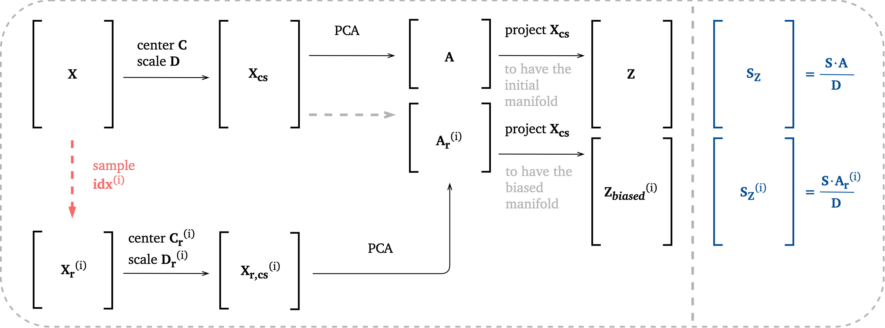
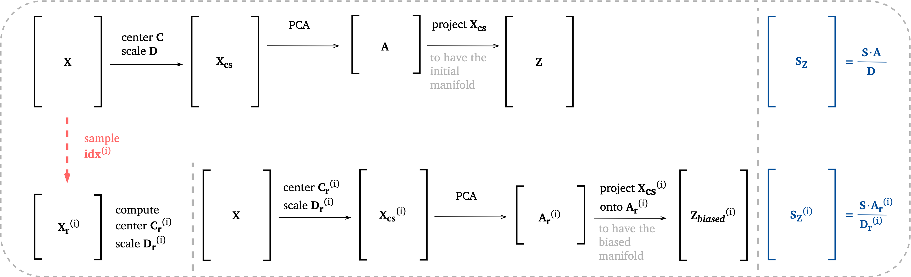

Cluster-biased PCA¶
cluster_biased_pca.py module contains functions for performing analysis of data sets using cluster-biased PCA. Cluster-biased PCA is a link between local PCA and global PCA - it is using local features to inform (bias) the global PCs.
The general methodology for cluster-biased PCA is presented in the scheme below:
{kind=link}
Biasing options¶
This section explains the choice for biasing_option input parameter in some of the functions in this module.
Schemes below present how centering and scaling of data sets can be handled and how PCA transformations are done using the original eigenvectors \(\mathbf{A}\) vs. the biased eigenvectors \(\mathbf{A_r}\). The superscript \((i)\) represents the \(i^{th}\) version of the idx vector.
Note
Given the same idx, the eigenvectors matrix \(\mathbf{A_r}\) will be the same in option 1, 3 and 4 (the reduced data set is pre-processed in the same way in these three options). It will only be different in option 2 where the reduced data set is not pre-processed after being sampled from \(\mathbf{X_{cs}}\).
Note
The biased PC-scores \(\mathbf{Z_{biased}}\) resulting from option 4 are included within the biased PC-scores \(\mathbf{Z_{biased}}\) resulting from option 3. Note that the only difference going with option 3 instead of option 4 is that there will be more observations in the PC-scores matrix, but the data set that is transformed by PCA in both cases was pre-processed using the same centers and scales.
Biasing option 1¶
In this option, the projection is always done using the centered and scaled original data set \(\mathbf{X_{cs}}\) (centered with \(\mathbf{C}\) and scaled with \(\mathbf{D}\)). When sources of the PCs are computed, they are scaled by the scaling coming from the original data matrix \(\mathbf{X}\). The centers and scales of the reduced data set (\(\mathbf{C_r}\) and \(\mathbf{D_r}\)) are not used anywhere beyond the pre-processing step.
{kind=link}
Biasing option 2¶
This option is the same as option 1, except we sample directly from \(\mathbf{X_{cs}}\) and then without additionally pre-processing \(\mathbf{X_r}\), we perform PCA on a reduced data set.

Biasing option 3¶
In this option, the projection is always done using the original data set \(\mathbf{X}\) centered and scaled with the centers and scales found on the reduced data set \(\mathbf{X_r}\) (centered by \(\mathbf{C_r}\) and scaled by \(\mathbf{D_r}\)). The sources \(\mathbf{S}\) are scaled with \(\mathbf{D_r}\) as well to match the data set scaling.

Biasing option 4¶
In this option, the projection is done on the reduced data set \(\mathbf{X_r}\) centered with \(\mathbf{C_r}\) and scaled with \(\mathbf{D_r}\).
Source terms \(\mathbf{S}\) have to be sampled as well, using the same idx vector. The sampled sources \(\mathbf{S}\) are scaled with \(\mathbf{D_r}\) as well to match the data set scaling.
Note
The major difference from the other three options is that this time, the number of transported observations is different from the original number of observations in the original data set.
{kind=link}
Biasing option 5¶
In this option, the reduced data set is only found in order to compute its centers and scales. Once we have that, we go back to the original data set and pre-process it using \(\mathbf{C_r}\) and \(\mathbf{D_r}\). PCA transformation is done on the entire data set \(\mathbf{X_{cs}^{(i)}}\) and the same data set is projected onto the found eigenvectors.
{kind=link}
Functions¶
Analyze centers movement¶
-
PCA.cluster_biased_pca.analyze_centers_movement(X, idx_X_r, variable_names=[], plot_variables=[], title=False, save_plot=False, save_filename='')¶ This function analyzes the movement of centers in the subset of the original data set
X_rwith respect to the full original data setX.Note:
The original data set
Xis first normalized so that each variable ranges from 0 to 1. Samples are then extracted from the normalized data set to formX_r. The normalization is done so that centers can be compared across variables on one plot.- Parameters
X – original (full) data set.
idx_X_r – vector of indices that should be extracted from
Xto formX_r. It could be obtained as training indices fromtraining_data_generationmodule.variable_names – (optional) list of strings specifying variable names.
plot_variables – (optional) list of integers specifying indices of variables to be plotted. By default, all variables are plotted.
title – (optional) boolean or string specifying plot title. If set to
False, title will not be plotted.save_plot – (optional) boolean specifying whether the plot should be saved.
save_filename – (optional) plot save location/filename.
Returns:
norm_centers_X- normalized centers of the original (full) data setX.norm_centers_X_r- normalized centers of the reduced data setX_r.center_movement_percentage- relative percentage specifying how the center has moved betweenXandX_r. The movement is measured relative to the original (full) data setX.
Plotting example¶
This function will produce a plot that shows the normalized centers and a percentage by which the new centers have moved with respect to the original ones. Example of a plot:

If you do not wish to plot all variables present in a data set, use the plot_variables list as an input parameter to select indices of variables to plot:

Analyze eigenvector weights movement¶
-
PCA.cluster_biased_pca.analyze_eigenvector_weights_movement(eigenvector_matrix, variable_names, plot_variables=[], normalize=False, zero_norm=False, title=False, save_plot=False, save_filename='')¶ This function analyzes the movement of weights on an eigenvector obtained from a reduced data set at each iteration. The color-coding marks the iteration number - if there is a consistent trend the coloring should form a clear trajectory. The zero-th iteration corresponds to eigenvectors found on the original data set X. The last iteration corresponds to eigenvectors found on the “equilibrated” data set.
Note:
This function plots absolute, (and optionally normalized) values of weights on each variable. Columns are normalized dividing by the maximum value. This is done in order to compare the movement of weights equally, with the highest, normalized one being equal to 1. You can additionally set the
zero_norm=Truein order to normalize weights such that they are between 0 and 1 (this is not done by default).- Parameters
eigenvector_matrix – matrix of concatenated eigenvectors coming from different data sets or from different iterations.
variable_names – list of strings specifying variable names.
plot_variables – (optional) list of integers specifying indices of variables to be plotted. By default, all variables are plotted.
normalize – (optional) boolean specifying whether weights should be normlized at all. If set to false, the absolute values are plotted.
zero_norm – (optional) boolean specifying whether weights should be normalized between 0 and 1. By default they are not normalized to start at 0. Only has effect if
normalize=True.title – (optional) boolean or string specifying plot title. If set to
False, title will not be plotted.save_plot – (optional) boolean specifying whether the plot should be saved.
save_filename – (optional) plot save location/filename.
- Raises
ValueError – if the number of variables in
variable_nameslist does not correspond to variables in theeigenvectors_matrix.
Plotting example¶
Three weight normalization variants are available:
No normalization, the absolute values of the eigenvector weights are plotted. To use this variant set
normalize=False. Example can be seen below:

Normalizing so that the highest weight is equal to 1 and the smallest weight is between 0 and 1. This is useful for judging the severity of the weight movement. To use this variant set
normalize=Trueandzero_norm=False. Example can be seen below:
{kind=link}
Normalizing so that weights are between 0 and 1. This is useful for judging the movement trends since it will blow up even the smallest changes to the entire range 0-1. To use this variant set
normalize=Trueandzero_norm=True. Example can be seen below:

If you do not wish to plot all variables present in a data set, use the plot_variables list as an input parameter to select indices of variables to plot:
{kind=link}
Analyze eigenvalue distribution¶
-
PCA.cluster_biased_pca.analyze_eigenvalue_distribution(X, idx_matrix, k_list, scaling, biasing_option, title=False, save_plot=False, save_filename='')¶ This function analyzes the normalized eigenvalue distribution when PCA is performed on different versions of the reduced data sets
X_rvs. on the original data setX.- Parameters
X – original (full) data set.
idx_matrix – matrix of collected idx vectors.
k_list – list of numerical labels for the idx_matrix columns.
scaling – data scaling criterion.
biasing_option – integer specifying biasing option. See documentation of cluster-biased PCA for more information. Can only attain values [1,2,3,4,5].
title – (optional) boolean or string specifying plot title. If set to
False, title will not be plotted.save_plot – (optional) boolean specifying whether the plot should be saved.
save_filename – (optional) plot save location/filename.
Returns:
min_at_q2_k- label for which the eigenvalue was smallest when q=2.min_at_q3_k- label for which the eigenvalue was smallest when q=3.max_at_q2_k- label for which the eigenvalue was largest when q=2.max_at_q3_k- label for which the eigenvalue was largest when q=3.
{kind=link}
Equilibrate cluster populations¶
-
PCA.cluster_biased_pca.equilibrate_cluster_populations(X, idx, scaling, X_source=[], biasing_option=1, n_iterations=10, stop_iter=0, verbose=False)¶ This function gradually equilibrates cluster populations heading towards population of the smallest cluster in
n_iterations.At each iteration it generates the reduced data set
X_r(i)made up from new populations, performs PCA on that data set to find thei-thversion of the eigenvectors. Depending on the option selected, it then does the projection of a data set (and optionally also its sources) onto the found eigenvectors.- Parameters
X – original (full) data set.
idx – vector of indices classifying observations to clusters. The first cluster has index 0.
scaling – data scaling criterion.
X_source – source terms corresponding to the state-space variables in
X.biasing_option – integer specifying biasing option. See documentation of cluster-biased PCA for more information. Can only attain values [1,2,3,4,5].
n_iterations – number of iterations to loop over.
stop_iter – number of iteration to stop.
verbose – boolean for printing verbose details.
- Raises
ValueError – if
biasing_optionis not 1, 2, 3, 4 or 5.
Returns:
eigenvalues- collected eigenvalues from each iteration.eigenvectors- collected eigenvectors from each iteration.pc_scores- collected PC scores from each iteration.pc_sources- collected PC-1 sources from each iteration. This variable is only returned ifX_sourceswas passed as an input parameter.idx_train- the final training indices from the equilibrated iteration.X_center- a vector of final centers that were used to center the data set at the last (equlibration) iteration.X_scale- a vector of final scales that were used to scale the data set at the last (equlibration) iteration.
Equilibration¶
For the moment, there is only one way implemented for the equilibration. The smallest cluster is found and any larger j-th cluster’s observations are diminished at each iteration by
N_j is the number of observations in the j-th cluster and N_smallest_cluster is the number of observations in the smallest cluster. n_iterations is an input parameter in the function.
This is presented in the scheme below:

Future implementation might include equilibration that slows down close to equilibrium. This might be helpful for sensitivity analysis.
Interpretation for the outputs¶
This function returns 3D arrays eigenvectors, pc_scores and pc_sources that have the following structure: